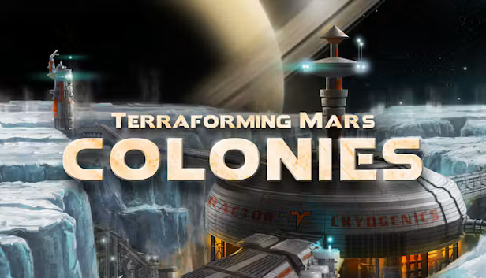
Professional experience
Terraforming Mars: Colonies
Gameplay, UI, maintenance, in-game store updates and client-side fixes for server communication.
Unity · C# · PC & Mobile
SOFTWARE & GAME DEVELOPMENT
Professional experience, software tools and personal projects. I enjoy exploring different technologies and solving technical problems.

Gameplay, UI, maintenance, in-game store updates and client-side fixes for server communication.
Unity · C# · PC & Mobile
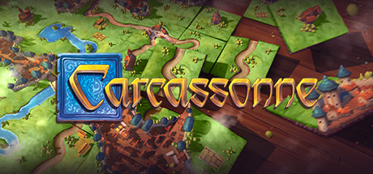
Maintenance of the in-game store within an existing digital board game.
Unity · C#
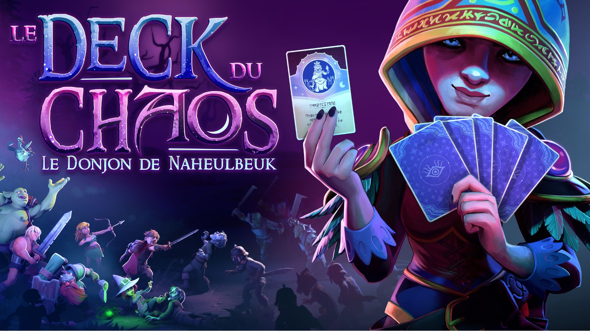
Professional game development experience. Details of my contributions will be added here.
Game Development · C# · PC
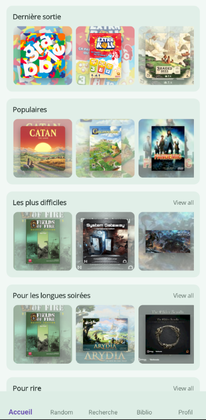
A cross-platform board game collection app built with .NET MAUI, Supabase and the BoardGameGeek API.
C# · .NET MAUI · PostgreSQL · Supabase · REST API

A personal game project.
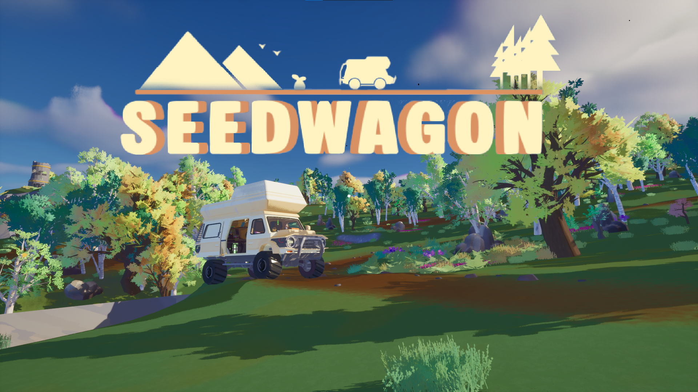
A game project focused on exploration and progression.
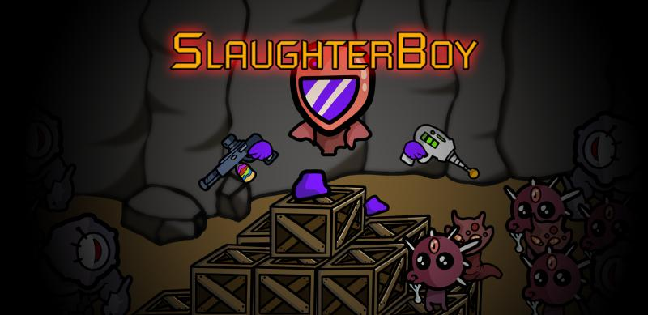
A personal game project.
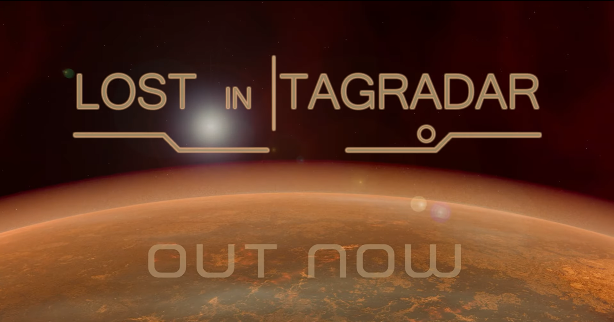
A personal game project.
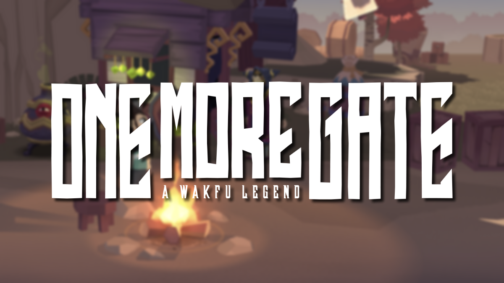
Tools for creating and editing game cards.
C# · Unity
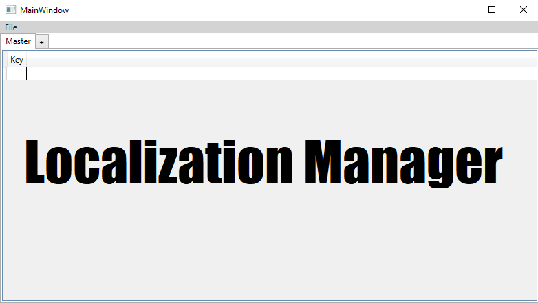
A C# and WPF tool for managing localization data.
C# · WPF · CSV · JSON · XML
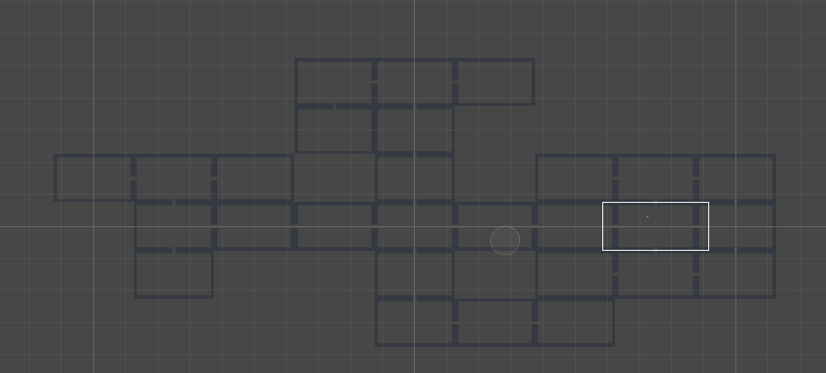
A procedural dungeon generation project.
C# · Unity
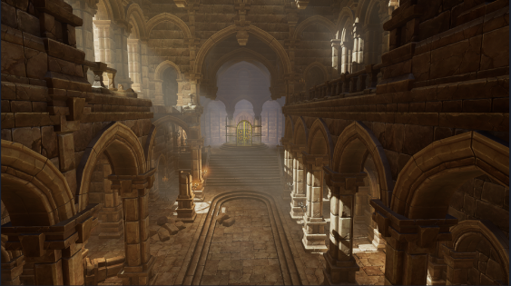
A solo puzzle game project using Unreal Engine 5, C++ and Blueprints.
Unreal Engine 5 · C++ · Blueprints
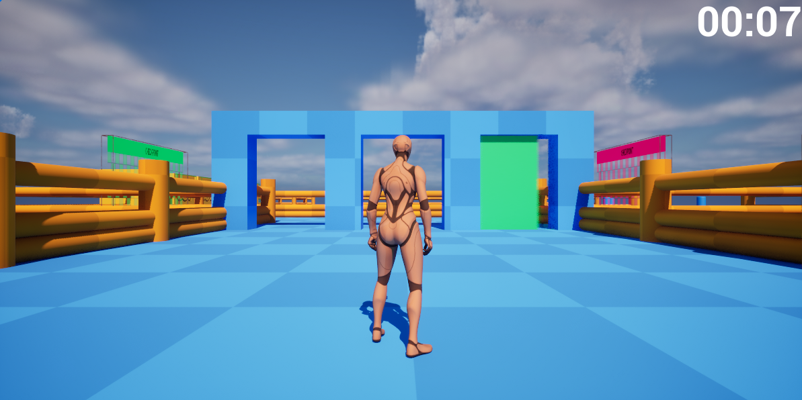
A solo puzzle game project using Unreal Engine 5, C++ and Blueprints.
Unreal Engine 5 · Blueprints
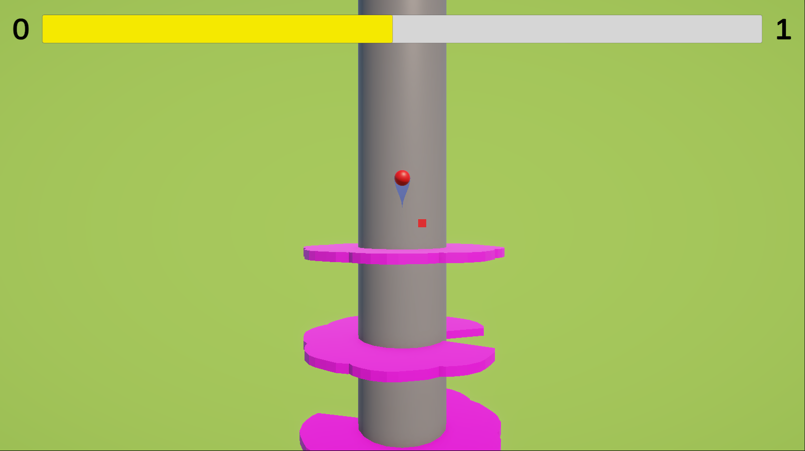
A short prototype created in approximately three hours.
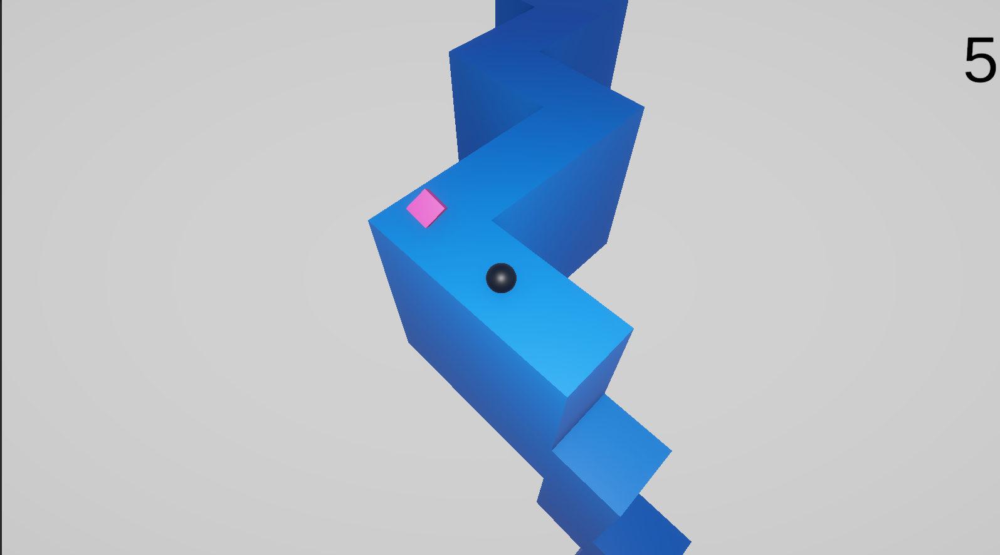
A short prototype created in approximately three hours.